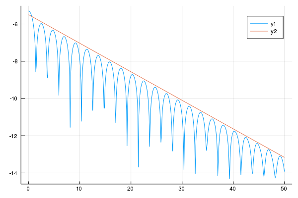

Vlasov-Poisson
We consider the dimensionless Vlasov-Poisson equation for one species with a neutralizing background.
\[ \frac{∂f}{∂t}+ v⋅∇_x f + E(t,x) ⋅ ∇_v f = 0, \\
- Δϕ = 1 - ρ, E = - ∇ ϕ \\
ρ(t,x) = ∫ f(t,x,v) dv\]
using Plots, LinearAlgebra
import Splittings:UniformMesh, BSpline
import Splittings:@Strang
import Splittingsfunction push_t!(f, mesh1, v, n2, dt)
Splittings.advection!(f, mesh1, v, n2, dt, BSpline(5))
endpush_t! (generic function with 1 method)function push_v!(f, fᵗ, mesh1, mesh2, nrj, dt)
rho = Splittings.compute_rho(mesh2, f)
e = Splittings.compute_e(mesh1, rho)
push!(nrj, 0.5*log(sum(e.*e)*mesh1.step))
transpose!(fᵗ, f)
Splittings.advection!(fᵗ, mesh2, e, mesh1.length, dt, BSpline(5))
transpose!(f, fᵗ)
endpush_v! (generic function with 1 method)function landau(tf, nt)
n1, n2 = 32, 64
x1min, x1max = 0.0, 4π
x2min, x2max = -6., 6.
mesh1 = UniformMesh(x1min, x1max, n1; endpoint=false)
mesh2 = UniformMesh(x2min, x2max, n2; endpoint=false)
x = mesh1.points
v = mesh2.points
ϵ, kx = 0.001, 0.5
f = zeros(Complex{Float64},(n1,n2))
f .= (1.0.+ϵ*cos.(kx*x))/sqrt(2π) * transpose(exp.(-0.5*v.^2))
fᵗ = zeros(Complex{Float64},(n2,n1))
dt = tf / nt
nrj = Float64[]
for it in 1:nt
@Strang( push_t!(f, mesh1, v, n2, dt),
push_v!(f, fᵗ, mesh1, mesh2, nrj, dt))
end
nrj
endlandau (generic function with 1 method)nt = 500
tf = 50.0
t = range(0.0, stop=tf, length=nt)
@time nrj = landau(tf, nt)
plot( t, nrj)
plot!(t, -0.1533*t.-5.50) 5.816312 seconds (9.32 M allocations: 522.791 MiB, 6.74% gc time)
This page was generated using Literate.jl.